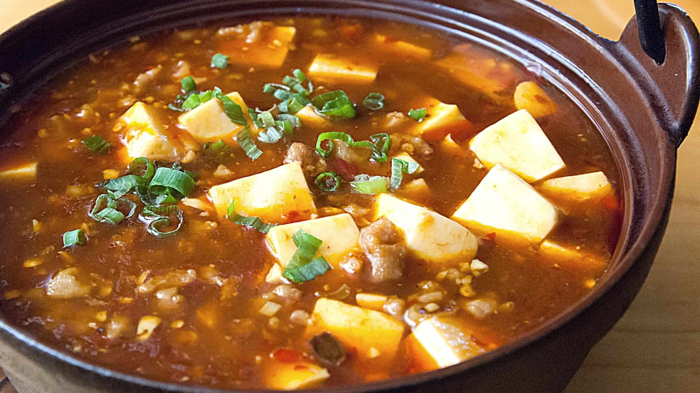

Description
A spectauclar Sichuan dish that combines spiciness with the right amounts of tanginess. True, authentic and delicious!
Ingredients to start with
- 10-12 red dried chilies cut in 1/2 inch long pieces
- 1-2 tbsps. of Sichuan peppercorns
- 2.5 tbsps. of Sichuan Dou Ban Jiang
- 1.5 tsps. of fermented black soybean AKA Dou Chi
- 2 tbsps. of Chinese cooking wine
- 1 lb. of soft tofu
- 1/2 tsp of salt
- 2 tbsp of vegetable oil
- 200 grams of ground meat Chicken, pork, or beef
- 4 scallions diced; separate the green and white part
- 2 tbsps. of diced garlic
- 1.5 tsps. of minced ginger
- 1 tsp of paprika
- 2 tsps. of sugar
- 1.5 cups of beef stock or water
- 2 tsp of soy sauce
- 1 tbsps. of cornstarch
Steps to make it!
- 1. Toast the red dried chilies and Sichuan peppercorns in a wok over medium low heat for a couple of minutes. Let it cool first, then blend until find.
This is called Dao Kou La Jiao (刀口辣椒, peppers under the blade), very useful for any types of Ma La (spicy and numbing )dish.
- 2. Blend the Sichuan Dou Ban Jiang, Dou Chi, and cooking wine in a blender until it turns into a fine paste. Set it aside.
This is to grind the firm broad bean pieces in the Dou Ban Jiang so the texture and the taste will be better.
- 3. Cut the tofu into bite size cubes. Add 1/2 tsp of salt to 1.5 liters of boiling water. Blanch the tofu for a couple of minutes. Remove the tofu from the water and set it aside.
The blanch will reduce the beany taste and also prevent the tofu from breaking apart while stirring.
- 4. Turn the heat to high and heat the wok until it is smoking hot. Add cooking oil. Swirl it around to coat the bottom of the wok. Add ground meat (beef, chicken, or pork) and stir
until cooked through.
- 5. Push the meat to the side. Add the Doubanjiang paste and stir over low heat for a couple of minutes to active the umami flavor.
- 6. Add minced garlic, minced ginger, diced white part of the scallion, paprika, sugar, and half of the dao kou la jiao, reserve the other half to add at the end.
Stir everything until well combined and fragrant.
- 7. Pour in the beef stock and bring to a boil. Taste to adjust the flavor. Mine needed 2 tsp of soy sauce. It should be saltier compared to your normal taste because
the tofu doesn’t have that much flavor. This dish is normally served with white rice so you need the flavor to be strong to go good with the rice.
- 8. Add the tofu and simmer on low heat for 5 minutes.
- 9. Mix 1 tbsp of cornstarch and 1/4 cup of water. Add to the wok in 3 batches and stir to thicken everything. For better presentation, do you best not to break the tofu.
- 10. Sprinkle the reserved Dao Kou La Jiao and the diced scallion as garnish.